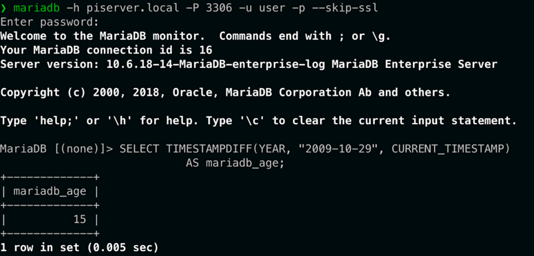

En esta sección te muestro mi experiencia en la instalación, configuración y administración de WordPress, junto con la gestión de bases de datos en MariaDB mediante phpMyAdmin.
He manejado bases de datos con MariaDB, gestionando usuarios, permisos y optimizando consultas.
